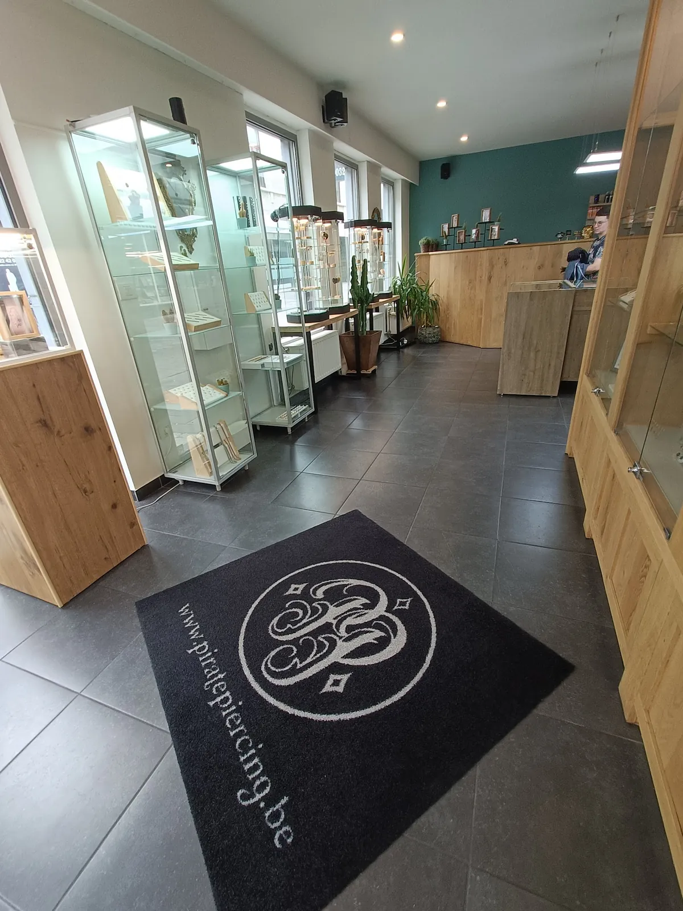
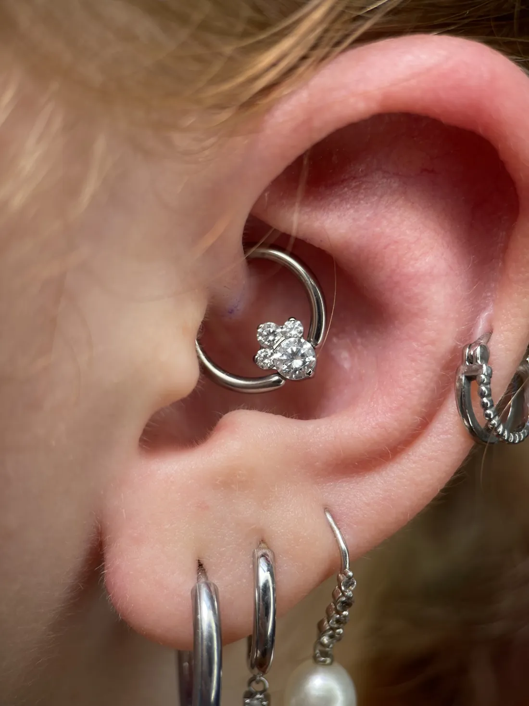
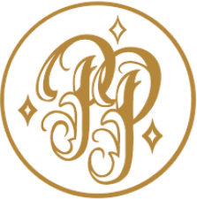
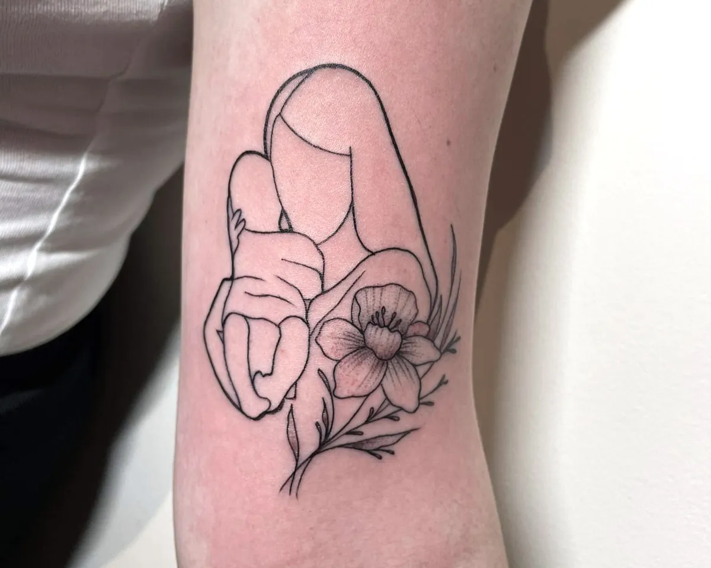
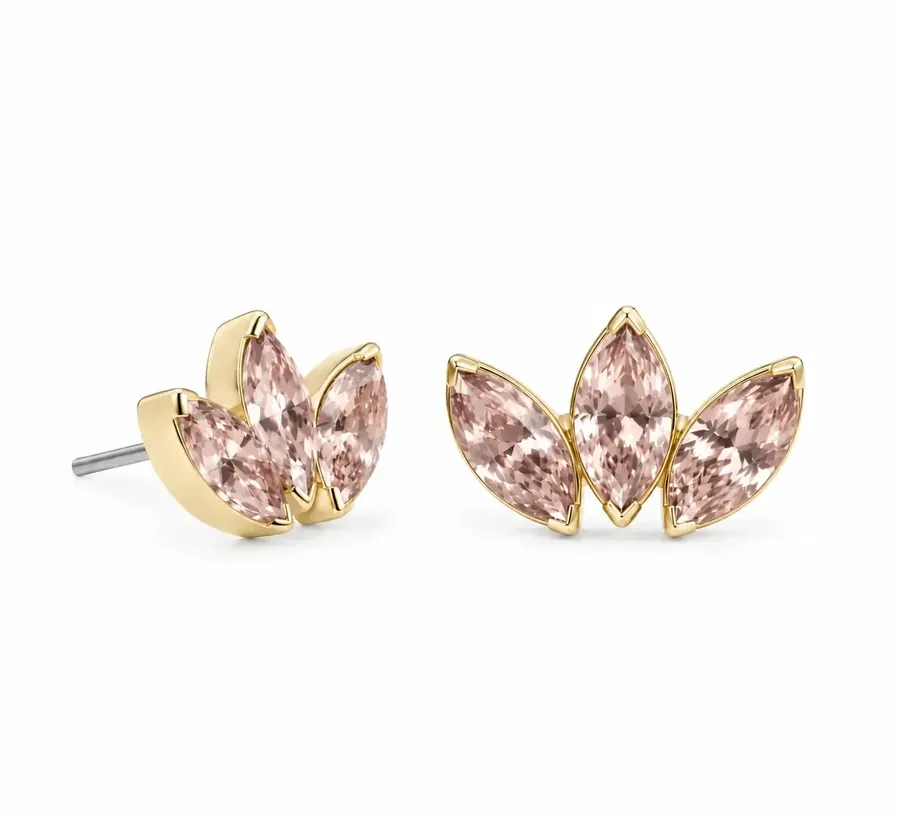
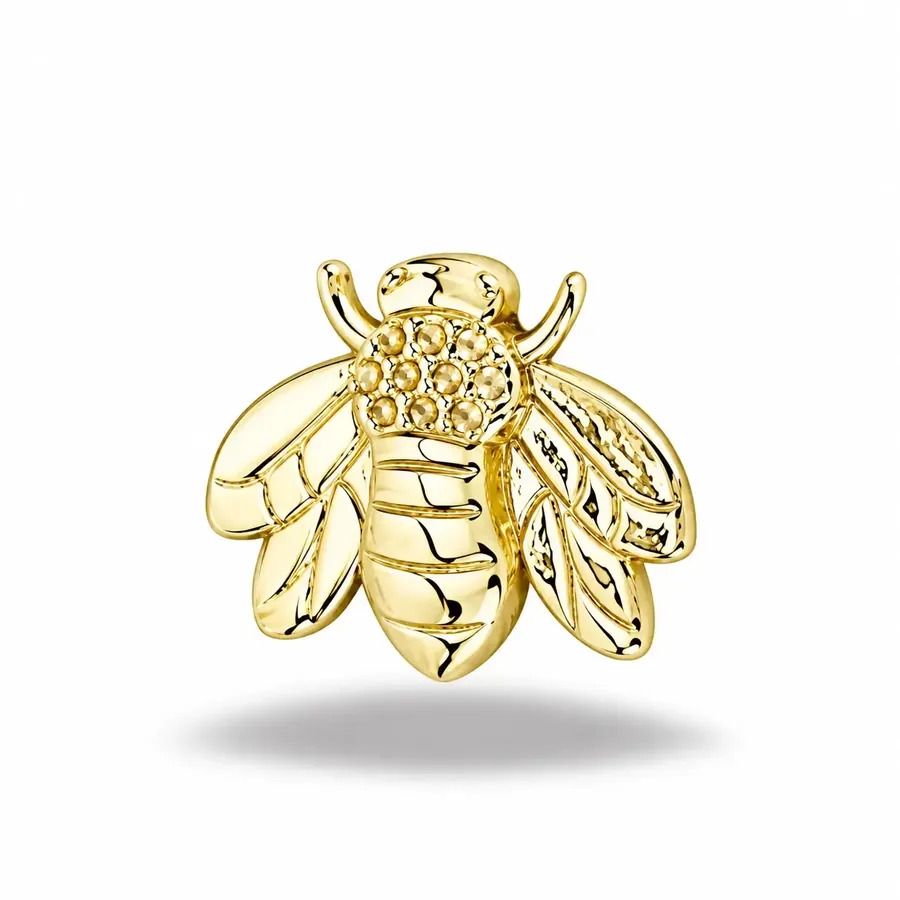
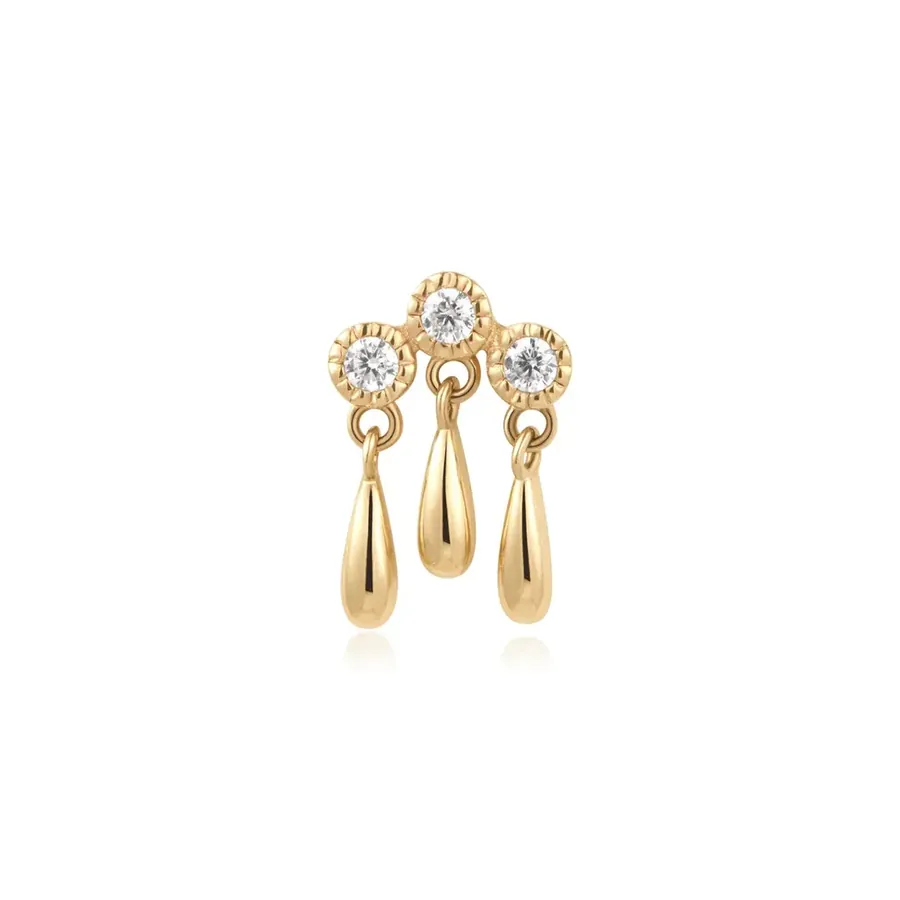
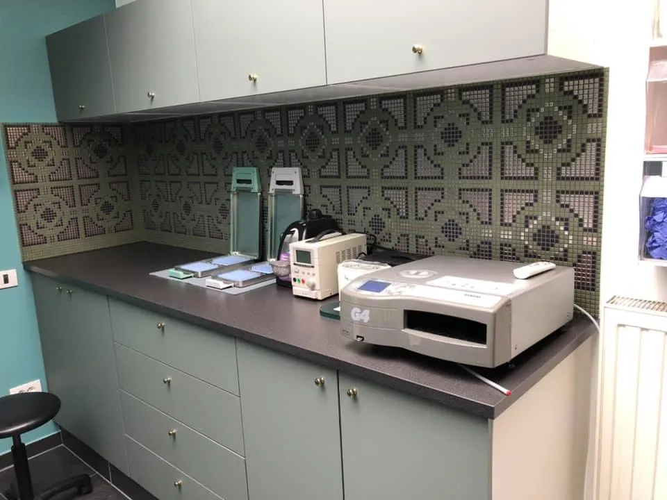
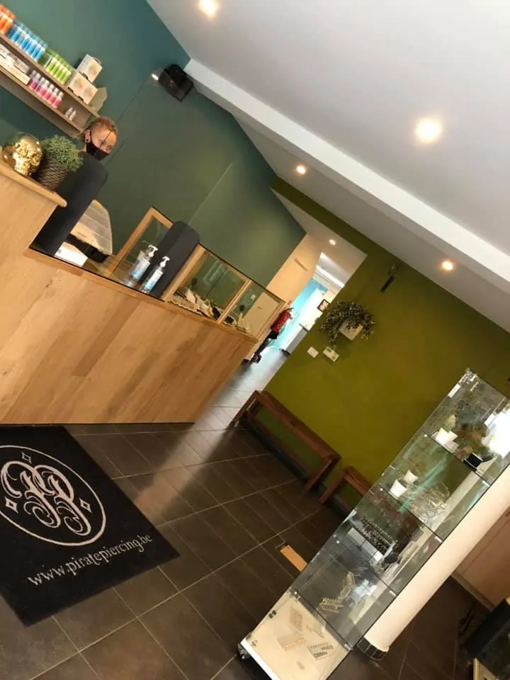

Piercings
We nemen echt de tijd om te kijken welke piercing bij jouw anatomie past. En als iets niet past, zeggen we dat ook.
- Lobe
- Helix
- Daith
- Tragus
- Neus
- Septum
- Tong
- Navel
Eerlijk advies over wat bij jouw oor, neus of lip past. Steriel gezet, rustig uitgelegd, met juwelen van topmerken.
4,8 ★★★★★
336 reviews op Google



Piercings, tattoos en juwelen onder één dak. Kom gerust binnen om rond te kijken, te passen of gewoon iets te vragen.
We nemen echt de tijd om te kijken welke piercing bij jouw anatomie past. En als iets niet past, zeggen we dat ook.

02Ook voor je tattoo kan je bij ons terecht, van fijne lijnen tot een realistisch dier.
Geneest hij moeilijk of voelt er iets niet juist? Kom langs voor een check-up.
Juwelen van topmerken als Anatometal, BodyGems en Ember. Kies in de shop, of bestel via de webshop en ze zijn snel bij je thuis.
Naar de webshop →


Zo gaat het bij ons, stap voor stap.

Je wordt vriendelijk ontvangen aan de balie. Moet je even wachten, dan krijg je iets te drinken.
We kijken naar je oor of gezicht en bespreken de plaatsing tot ze klopt. Liever één keer te veel overlegd dan te weinig.
“Er werd meer overleg gepleegd over de plaatsing van mijn piercings dan bij sommige internationale vredesonderhandelingen, en dat stelde gerust.”Mick Hutsebaut, klant
Alles gebeurt steriel. De piercer legt uit wat hij doet en checkt tussendoor of het nog gaat.
Je krijgt duidelijke uitleg mee naar huis. Vragen achteraf zijn altijd welkom.
gemiddeld uit 336 reviews op Google. Veel klanten komen terug, sommigen zelfs van over de grens.
“De reactie was meteen: ‘Kom, dan gaan we dat voor je fixen!’ Geen irritatie of gedoe, maar juist ontzettend vriendelijk en begripvol. … Voor deze service en vriendelijkheid kom ik met alle liefde helemaal vanuit Nederland hiernaartoe gereden.”
“Ze hebben een enorm aanbod aan piercings en nemen echt de tijd om uitgebreid advies te geven over welke piercing het beste bij je past.”
De Pirate Crew: Heel hard bedankt voor de mooie review, Gwen!
“Ik zit in een rolstoel en ze deden echt alles om te zorgen dat het voor mij zo makkelijk mogelijk en zo comfortabel mogelijk. Ze zijn ook extreem hygiënisch.”
“Bij Pirate Piercing lieten ze me weten dat dit wél het geval was en gaven ze me een ring die nu super mooi aansluit aan mijn neus. Ze zijn daar hygiënisch en nog eens mega hartelijk.”

2300 Turnhout
2000 Antwerpen
Dezelfde aanpak en dezelfde juwelen, in het centrum van Antwerpen.
Boek meteen online, of stuur ons je vraag. Bijvoorbeeld welke piercing bij je past, of een foto van een piercing die moeilijk geneest.
Ik maakte deze demo voor jullie om te tonen wat er kan. Na een kort gesprek maak ik er iets veel persoonlijkers van, helemaal naar jullie wens.
Vrijblijvend. Ik kom langs of we bellen.
Op maat, op jullie eigen domein.
Geen voorschot. Jullie betalen pas als alles klaar is.
Hosting, domeinnaam en kleine wijzigingen, zoals nieuwe openingsuren.
Omdat een voorbeeld meer zegt dan een mail. Zo zien jullie meteen wat er kan, en het kost jullie niets.
Nee. Het gesprek is vrijblijvend. Vinden jullie het niks, dan is het daarmee gedaan.
Na ons gesprek staat jullie site binnen 10 tot 14 dagen online.
Zeker. Jullie domeinnaam kan gewoon blijven, de nieuwe site komt in de plaats van de oude.
Nee, dat doe ik op basis van ons gesprek. Eigen foto's zijn mooi meegenomen, maar niet nodig om te starten.